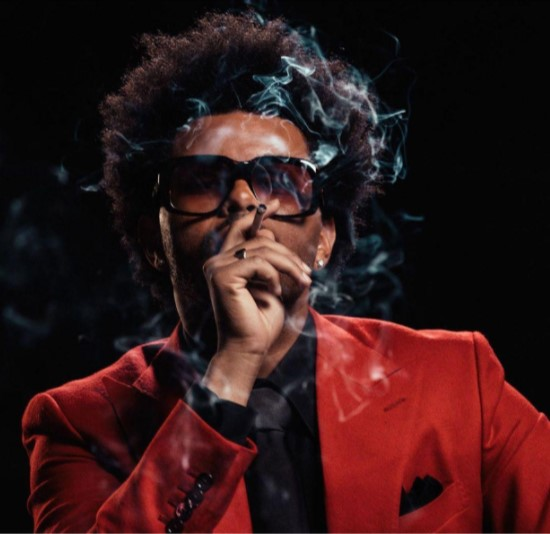
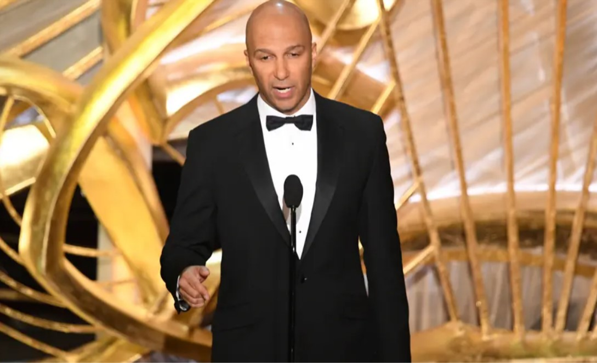

Home
Latest News
About Us
Contact
SocialSpark
MUSIC
NEWS
Kanye West to stream new album 'Donda 2' exclusively on $200 Stem Player
The rapper announced that the new music will not be made available on streaming services – "not on Apple Amazon Spotify or YouTube.” Instead, listeners will be able to access it exclusively via West's Stem Player device, which costs $200. The device will allow listeners to play four different track elements: vocals, drum, bass and music.
READ MORE

The weekend
Everything you need to know about the weekend album new release "Dawn FM".Revealing the album's cover art, which features him as an elderly guy, Dawn FM is set to drop on this week, with features from the likes of Tyler, the Creator, Lil Wayne, Quincy Jones, Oneohtrix Point Never, and actor Jim Carrey.
READ MORE

Tom Morello
Tom Morello writes an open letter asking for help evacuating music students out of Afghanistan. Rage Against the Machine guitarist Tom Morello has penned an open letter seeking help in evacuating a group of young women out of Afghanistan following the Taliban’s takeover of Kabul.
READ MORE
1
2